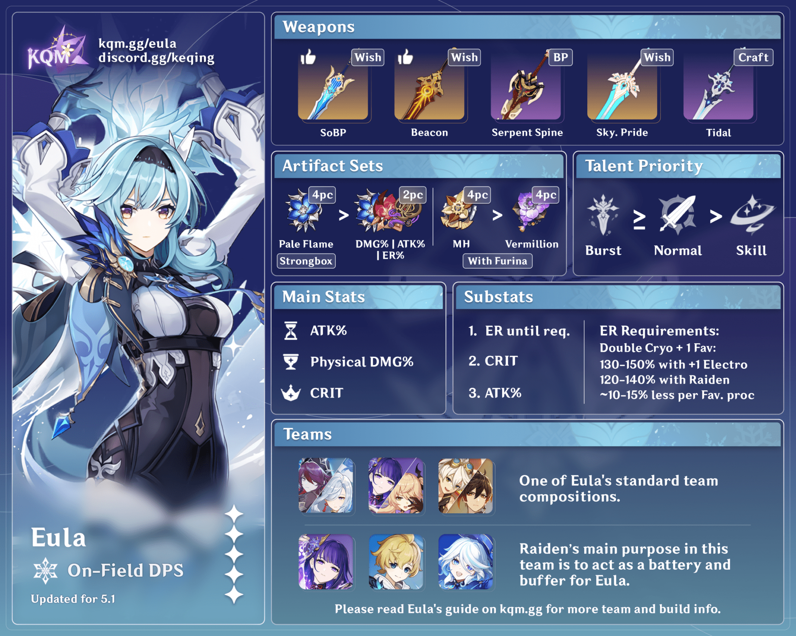

Eula Lawrence is a playable Cryo character in Genshin Impact. Although
a descendant of the infamous and tyrannical Lawrence Clan, Eula
severed her ties with the clan and became the captain of the
Reconnaissance Company with the Knights of Favonius.
As the Captain of the Knights of Favonius Reconnaissance Company and
the renowned Spindrift Knight, Eula spends most of her time out in the
wild and has won much acclaim leading her team of scouts on patrol.
The knights stationed in the mountains and valleys are often the
target of sneak attacks from monsters, but Eula has always been able
to resolve these crises by rendering swift support. She has also led
proactive attacks to destroy Abyss Order strongholds time and again,
nipping their nefarious plots in the bud. Due to Eula's background,
many contradictions surround her — she is a descendant of the Lawrence
clan and is considered by the citizens of Mondstadt to be the
embodiment of the blood of sinners. Despite everything, she severed
ties with her clan many years ago and joined the Knights of Favonius.
Yet prejudice is not so easily dispelled, and Eula has not been
treated fairly. In the eyes of Mondstadt's citizens, she remains an
"outsider," or even a "dangerous individual." Years of such
experiences have led Eula to build an invisible shield to protect
herself from unwarranted harm. The term "vengeance" is perhaps the
most visible edge of this shield. Only by disregarding wild gossip and
trying to accept the logic of her approach to the world can one come
to understand the truth behind the complex shell of this young woman.

Character Demo - "Eula: Flickering Candlelight" | Genshin Impact